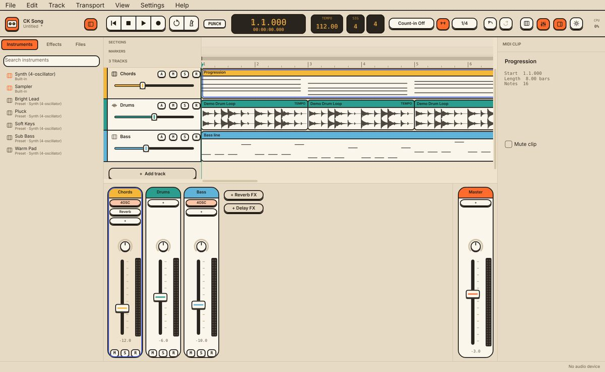
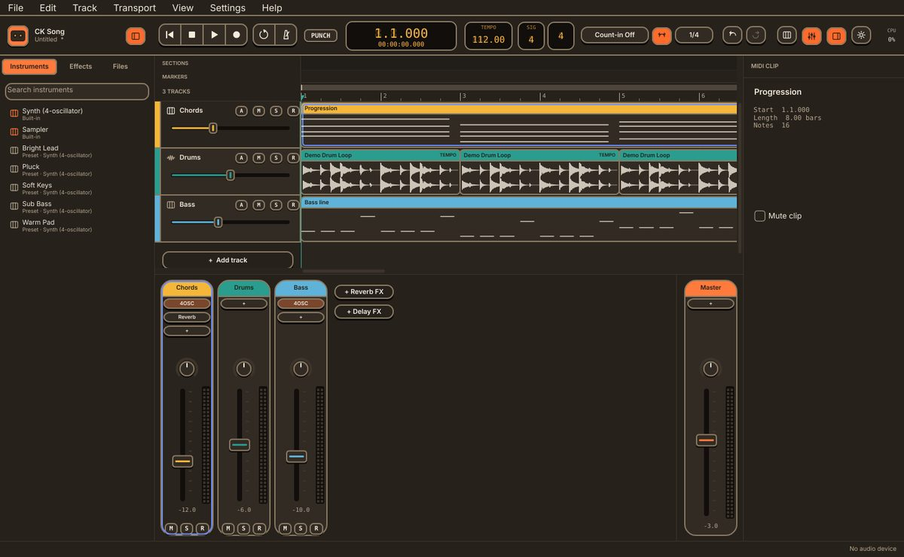

Record, write, mix. On any desk.
CK Song is a modern, fast digital audio workstation: record audio and MIDI, write in the piano roll, arrange, mix on a console with effects, and export your song. For Windows, macOS and Linux.


What's inside
Arrange
Audio and instrument tracks, clips with waveforms, snap, loop, sections you drag to rearrange the song.
Compose
Piano roll with velocity and quantize, a drum editor, step input and a chord track.
Mix
Console with faders and meters, inserts, sends, FX channels, sidechain and automation.
Sound
Built-in synth, sampler and effects, plus your VST3 and AU plugins.
Record
Audio and MIDI with a metronome, count-in, punch range and loop takes for comping.
Finish
Export WAV, FLAC, OGG or MP3, stems, or a whole mastered album.
Installing
Windows
Run the installer. CK Song then updates itself: new versions download in the background and install when you quit.
macOS
Open the disk image and drag CK Song to Applications. Until the app is notarized, open it the first time with right-click > Open. Updates install when you quit.
Linux
Make the AppImage executable (chmod +x) and run it. It replaces itself with new versions when you quit.